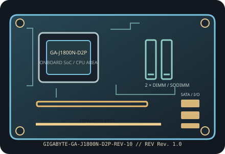

[ INDIVIDUAL COMPONENT // MOTHERBOARDS ]
GIGABYTE GA-J1800N-D2P (Rev. 1.0)
Mini-ITX board with an onboard Intel Celeron J1800 Bay Trail-D SoC. This entry is limited to GA-J1800N-D2P Rev. 1.0 and does not apply to the D2H sibling.

IDENTIFICATION: Confirm the complete model suffix and PCB revision printed on the board. Select firmware and parts from the documentation for this exact revision; a matching socket or product family alone does not establish compatibility.
Specifications
| Exact model / PCB revision | GIGABYTE GA-J1800N-D2P (Rev. 1.0) |
|---|---|
| Processor / socket | Intel Celeron J1800 Bay Trail-D dual-core SoC, up to 2.41 GHz; soldered to the board, with no replaceable CPU socket. |
| Chipset | Intel Bay Trail-D SoC; platform I/O is integrated rather than provided by a separate replaceable chipset. |
| Form factor | Mini-ITX, 170 × 170 mm. |
| Memory and slots | Two DDR3/DDR3L SO-DIMM slots, dual-channel, up to 8 GB total, non-ECC unbuffered; 1333 MT/s supported per GIGABYTE model documentation. |
| Expansion | One conventional 32-bit PCI expansion slot; this is not PCI Express. Verify card dimensions and bracket clearance. |
| Storage | Two SATA 3 Gb/s connectors; no M.2 or mSATA storage interface documented. |
| Network and onboard I/O | Realtek 10/100/1000 Ethernet, onboard HD audio, HDMI and D-Sub display outputs. |
| Power connections | 24-pin ATX main-power and 4-pin ATX12V CPU-power connectors; use an ATX supply with both leads and adequate case airflow. |
| BIOS / firmware | GIGABYTE UEFI DualBIOS. The processor is fixed on the PCB; check the Rev. 1.0 support/download page for the matching BIOS and do not cross-flash D2H or other J1800 board firmware. |
| Enclosure compatibility | 170 × 170 mm Mini-ITX board with standard Mini-ITX mounting holes; enclosure must provide the board’s rear-I/O aperture and legacy PCI card clearance. |
Compatibility and revision notes
The D2P has a legacy PCI expansion slot and a different connector layout from GA-J1800N-D2H. Confirm exact suffix and PCB revision; processor and chipset are onboard.
Before assembly, verify the exact CPU support list and minimum firmware, memory generation and population order, storage lane sharing, add-in card dimensions, chassis standoffs and PSU leads in the cited revision-matched manual. Observe ESD precautions and never update with firmware for a similarly named board.
Installation and preservation
Inspect the PCB revision silkscreen, socket or soldered processor, memory slots, power connectors, storage sockets and rear-I/O ports before use. Record BIOS version, date/serial identifiers, installed accessories and test conditions; keep the board manual and firmware tied to its exact model and revision.
Manufacturer sources & manuals
- GIGABYTE — GIGABYTE GA-J1800N-D2P (Rev. 1.0) specificationsOfficial specification record for this motherboard and revision.
- GIGABYTE — GIGABYTE GA-J1800N-D2P (Rev. 1.0) manual, BIOS and support downloadsOfficial revision-specific support page; use its manual, CPU support list and firmware downloads to verify installation and compatibility.
Specifications above are a static reference summary. The matching manufacturer manual, PCB revision and support list are authoritative.